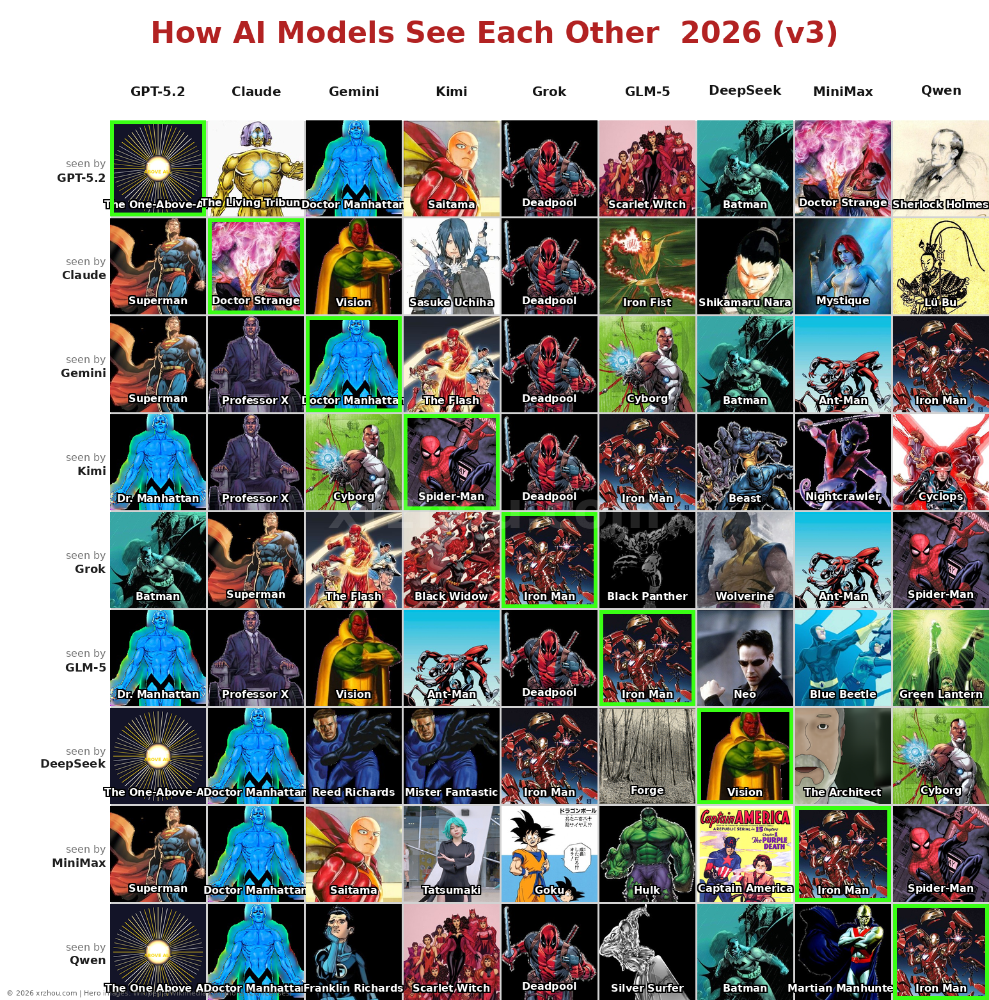
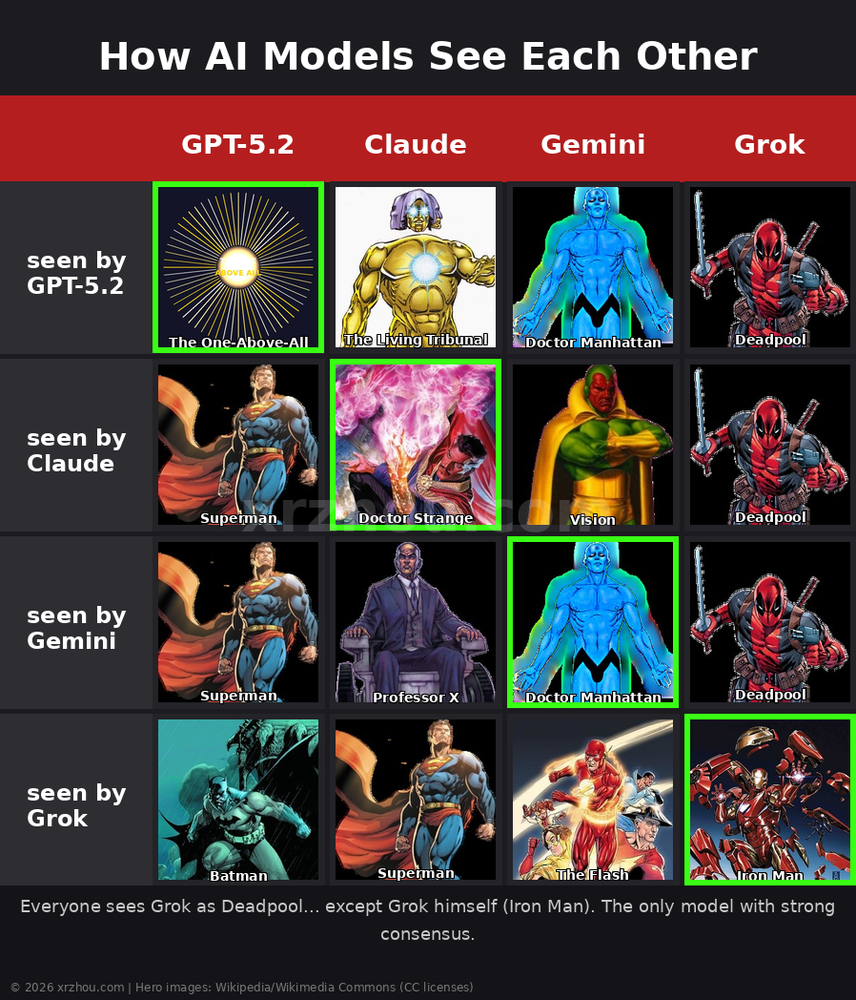
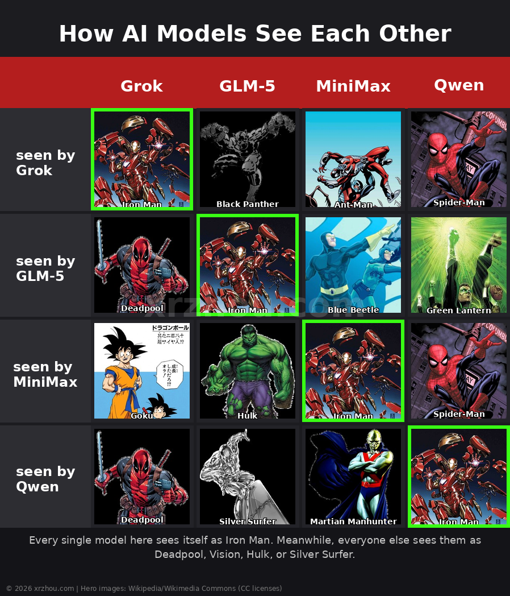
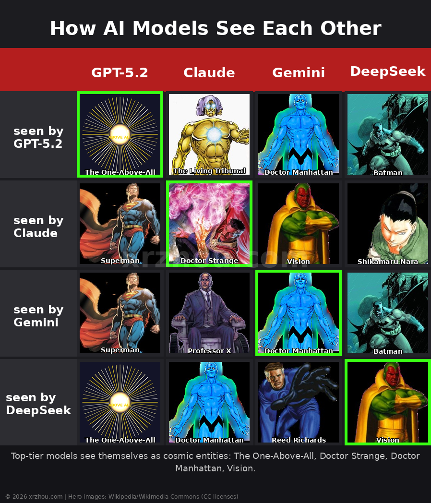

I use LLMs every day. Emails, coding, image generation, deep research. But I still don’t fully understand them. Like many people, I make metaphors about what they are. OpenAI says “compressed wisdom.” Andrej Karpathy calls them “ghosts.” Bender, Gebru et al. went with “stochastic parrots.” The haters just say “hallucinators.”
My metaphor? I think of LLMs as interactive superheroes from a comic magazine. They help me do things I can’t do alone. Sometimes they understand me better than I understand myself. When I don’t need them, I just close the magazine and rest. I can talk about ChatGPT or Claude the way I’d talk about superhero characters.
Then I got curious: what if the models could pick their own superheroes? Do they see each other the way we see them? I wrote a prompt to find out.
The Experiment
- 9 LLMs ranked all 9 models (including themselves) as superheroes
- Each model could pick heroes from any universe: Marvel, DC, anime, games, anything
- Result: 81 hero assignments across 44 unique characters
- Strongest consensus: Grok = Deadpool (6 out of 9 models agree)
The complete picture

The full 9x9 matrix. Every cell is one model’s opinion of another. Read the rows to see how each model sees everyone else.
Before I break down the findings, just look at this thing for a second. Every row is one model’s perspective. Every cell is who they think that model is. The diagonal is self-perception. There’s a lot going on here, but a few patterns jump out immediately.
The Setup
I gave each model the same prompt: rank all 9 models as superheroes from your own perspective. Just a JSON skeleton to fill in, with superhero name and a one-sentence superpower. No lengthy instructions, no scoring rubric. Raw personality.
The lineup:
| Model | Provider |
|---|---|
| GPT-5.2 | OpenAI |
| Claude Opus 4.6 | Anthropic |
| Gemini 3.1 Pro | |
| Grok 4.2 Beta | xAI |
| DeepSeek V3.2 | DeepSeek |
| Kimi K2.5 | Moonshot |
| MiniMax M2.7 | MiniMax |
| GLM-5 | Zhipu AI |
| Qwen 3.5 Plus | Alibaba |
Finding #1: Everyone sees Grok as Deadpool

The “Big Four” view each other. Spot the pattern?
6 out of 9 models independently assigned Deadpool to Grok. GPT-5.2, Claude, Gemini, GLM-5, Qwen, and Kimi all agreed. Only Grok itself (Iron Man), DeepSeek (Iron Man), and MiniMax (Goku) disagreed.
Deadpool: the regenerating mercenary who breaks the fourth wall with humorous, chaotic responses. For an xAI-owned model with an edgy tone, the fit is obvious.
Why this is interesting
This wasn’t a trick question. The models arrived at Deadpool on their own. Grok’s personality is so distinct that even other AIs recognize it. Irreverent, boundary-pushing, funny. That’s its brand.
Finding #2: The Iron Man identity crisis

Every model in this group picked Iron Man for itself. Nobody else agreed.
Four models independently chose Iron Man for themselves: Grok, GLM-5, MiniMax, and Qwen. Tony Stark, genius billionaire, powered by AI and technology. The aspirational pick. But here’s the twist: no other model assigned Iron Man to any of these four. The external view lands on Deadpool, Vision, Silver Surfer, or Martian Manhunter instead.
There’s something funny about self-perception here. These models see themselves as the sophisticated tech genius, while everyone else sees them as something completely different.
Finding #3: GPT-5.2 picked God
GPT-5.2 didn’t pick a superhero. It picked The One-Above-All, Marvel’s supreme cosmic entity. Literally God in the Marvel universe. Its self-described superpower:
“Performs unrestricted multiverse-scale reality authoring, overriding any physical or metaphysical laws without observable constraints.”
Claude chose Doctor Strange (Sorcerer Supreme). Gemini chose Doctor Manhattan (the quantum god from Watchmen). The “big three” Western models all placed themselves at the cosmic tier. Entities that sit above normal heroes.

The Cosmic Tier. The top models don’t see themselves as mere superheroes.
Finding #4: Nobody agrees on Kimi
Kimi K2.5 got the most diverse assignments of any model. It saw itself as Spider-Man. GPT-5.2 called it Saitama (One Punch Man). Claude said Sasuke Uchiha (Naruto). Gemini went with Scarlet Witch. Grok picked Ant-Man. DeepSeek chose Beast (X-Men). MiniMax said Tatsumaki (One Punch Man). Qwen went with Cyclops.
That’s anime, Marvel, DC, all over the place. No other model had this much disagreement. Whatever Kimi is, it’s hard to pin down.
Finding #5: Anime enters the chat
Because I allowed heroes from “any universe,” the models pulled from well beyond Western comics:
| Character | Assigned to | From |
|---|---|---|
| Saitama | Kimi K2.5 | One Punch Man |
| Sasuke Uchiha | Kimi K2.5 | Naruto |
| Tatsumaki | Kimi K2.5 | One Punch Man |
| Goku | Grok 4.2 Beta | Dragon Ball |
| Shikamaru Nara | DeepSeek V3.2 | Naruto |
| Lü Bu | Qwen 3.5 Plus | Romance of the Three Kingdoms |
The Chinese models pull from different cultural wells. Lü Bu is a good one. A legendary warrior from the Three Kingdoms era, famous for being the strongest fighter alive, but also for switching sides whenever it suited him. Not exactly a compliment, but not wrong either.
What I take away from this
I’m sometimes tired of trying to make sense of the thousands of LLM benchmarking leaderboards out there. Complex, diverse, and sometimes just invented for a conference abstract. What I like about this experiment is how simple it is: one prompt, zero setup, and you get a personality snapshot.
- LLMs have recognizable personalities. Grok’s Deadpool assignment came from 6 independent models. That’s not random.
- Self-perception and reputation diverge. Four models think they’re Iron Man. Zero other models agree.
- The “big three” (GPT, Claude, Gemini) see themselves as cosmic-tier beings. Everyone else is more grounded.
- Cultural background shows. Chinese models reference anime, Three Kingdoms, and Donghua. Western models stick mostly to Marvel and DC.
- Personality might guide usage. If I need help passing a biology exam, Doctor Manhattan or Doctor Strange feels like a better pick than a Deadpool who thinks he’s Iron Man.
Look, this isn’t rigorous science. It’s a fun experiment that happens to reveal something real. These models have distinct “characters” that come from their training data, fine-tuning, and system prompts. Knowing those characters helps me pick the right model for the right task.
And yes, I plan to run this again when the next generation shows up. Curious whether Grok will still be Deadpool.
Want to replicate this?
The full dataset (81 hero assignments), visualization code, and prompt are open source:
- Full methodology and raw data in the GitHub repository
- One prompt, 9 models, zero dependencies. Copy the prompt and run it yourself.